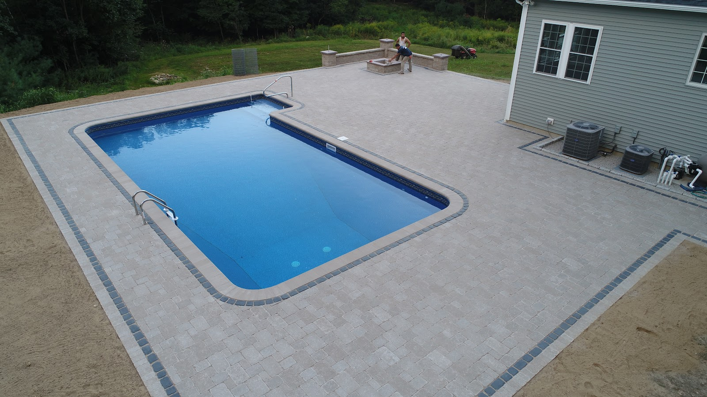
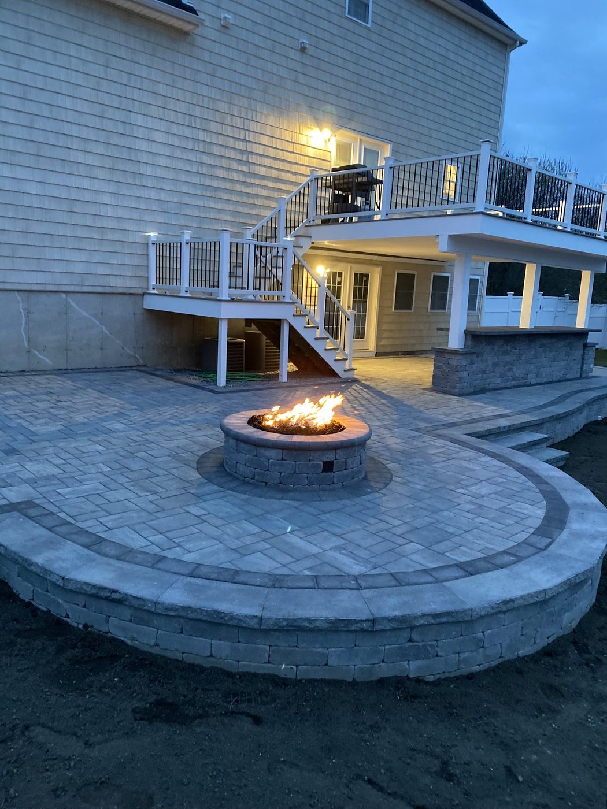
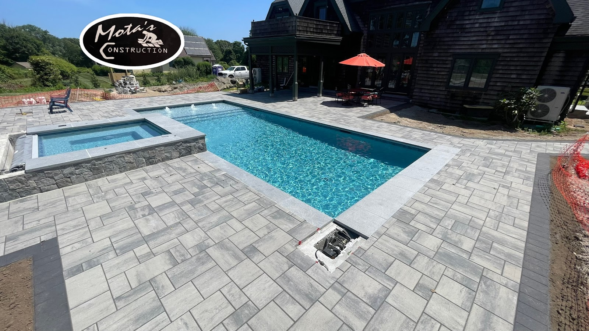
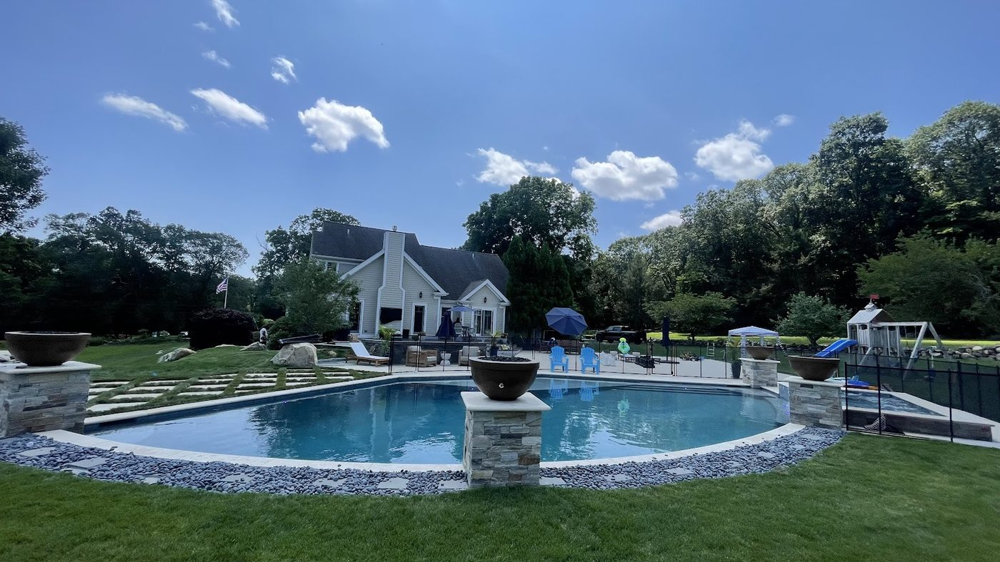
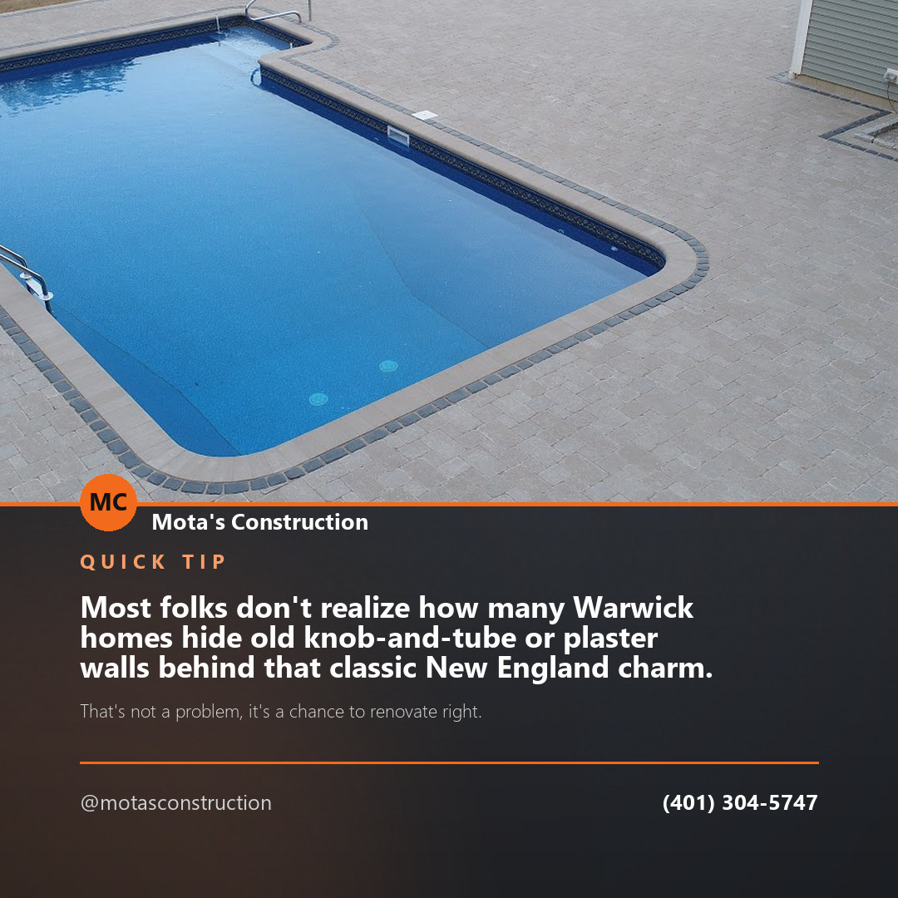
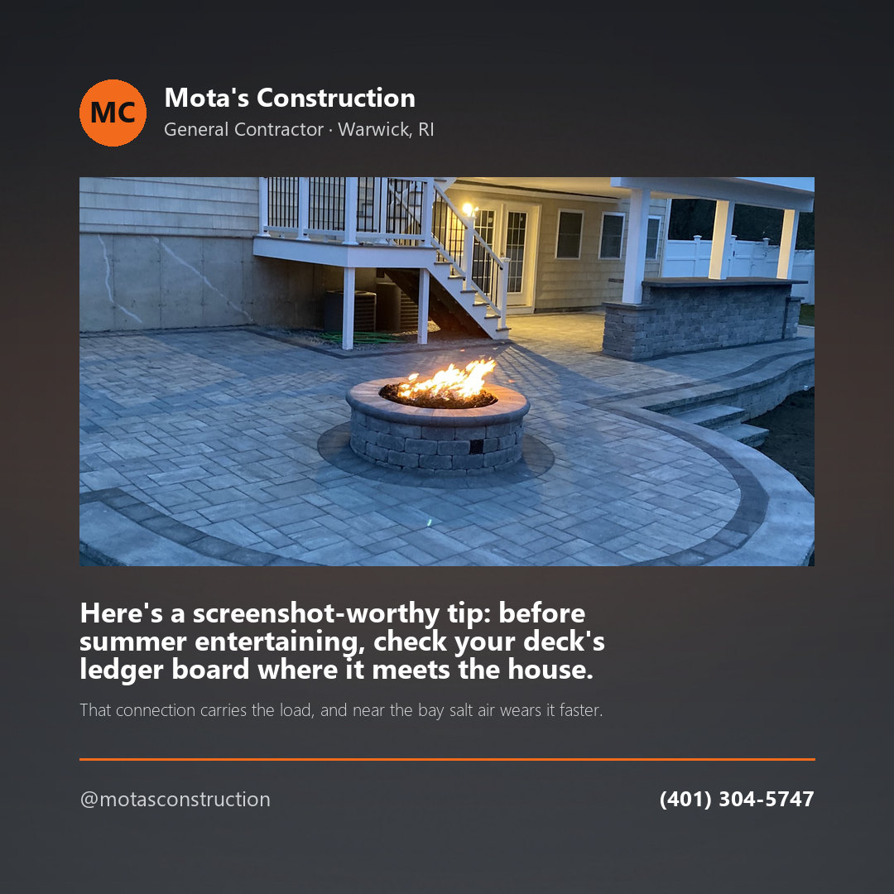
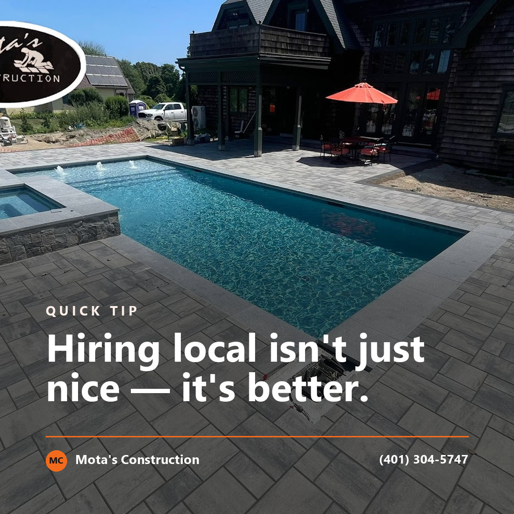

West Warwick, Rhode Island
Custom construction, done by the people who build it.
Mota's Construction is an owner-operated general contractor taking on custom work by consultation. Call to talk through your project.
Call (401) 304-5747
5.0
Google rating (2 reviews)
West Warwick
Local & owner-operated
Custom work
By consultation
Interested in custom work?
Mota's Construction takes on custom projects for homeowners in and around West Warwick. Every job starts with a conversation about what you're looking to build.
"If you are interested in custom work and would like to schedule a consultation or you are just looking for some additional information, please take a moment…"
Mota's Construction, in their own words
The fastest way to get started is a phone call. Reach out and set up a time to talk through the details.




Content
Three posts we wrote for you

Post idea · Facebook
Most folks don't realize how many Warwick homes hide old knob-and-tube or plaster walls behind that classic New England charm. That's not a problem, it's a chance to renovate right. Curious what's behind yours?

Post idea · Instagram
Here's a screenshot-worthy tip: before summer entertaining, check your deck's ledger board where it meets the house. That connection carries the load, and near the bay salt air wears it faster.

Post idea · Instagram
Hiring local isn't just nice — it's better. Call Mota's Construction and you get a neighbor who actually answers the phone and shows up. Proudly Warwick.